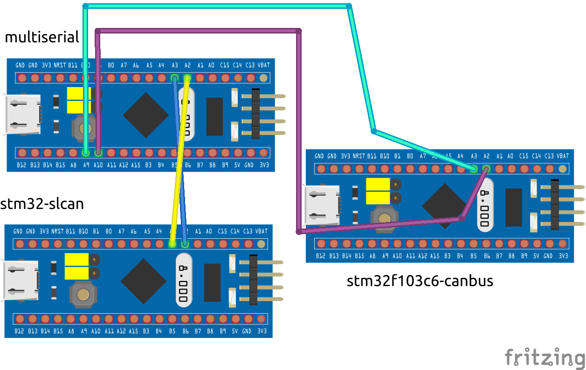

What is a SocketCAN Interface?¶
SocketCAN is a set of open-source CAN drivers and a networking stack contributed by Volkswagen Research to the Linux kernel. CAN (Controller Area Network) is a standard communication protocol used in embedded systems such as automotive and industrial applications for message-based communication between microcontrollers and other devices.
SocketCAN provides a standardized API (Application Programming Interface) for CAN communication in the Linux environment. It allows applications to communicate with CAN devices using a set of socket-based interfaces similar to those used for networking. This abstraction makes it easier for developers to work with CAN devices, as they can use familiar socket programming techniques.
Key features of SocketCAN include:
Standardized API: SocketCAN provides a consistent API for CAN communication, making it easier for developers to write applications that work with different CAN devices.
Socket-based Interface: Applications interact with CAN devices using sockets, which allows for easy integration into existing network programming paradigms.
Support for Multiple CAN Devices: SocketCAN supports multiple CAN devices simultaneously, allowing for complex CAN networks to be easily managed.
Integration with Linux Kernel: SocketCAN is integrated into the Linux kernel, making it readily available on Linux-based systems without the need for additional drivers.
Overall, SocketCAN simplifies the development of applications that need to communicate over CAN networks on Linux systems, providing a standardized and efficient interface for CAN communication.
Configuring SocketCAN interface : stm32multiserial¶
STM32F103 Bluepill devices are known for their affordability and versatility. These microcontroller units (MCUs) can be easily configured to function as a virtual COM port, making them popular choices for various embedded systems and DIY projects.
However, a peculiar design flaw limits the simultaneous use of the CAN (Controller Area Network) port and the Virtual COM port on these devices. This limitation poses a challenge for applications requiring both functionalities concurrently.
To circumvent this limitation, I adopted a workaround solution: utilizing two STM32 devices instead of one. By dedicating one device to forward data to the serial port and another to forward this data to the virtual COM port, I effectively bypassed the restriction. Fortunately, the low cost of these Bluepill devices made this workaround feasible, despite the need for additional hardware.
Although unconventional, this approach proved effective in achieving the desired functionality without compromising on cost-effectiveness. It underscores the adaptability and flexibility of STM32F103 Bluepill devices in addressing real-world constraints and challenges in embedded systems development.
The serial ports of the Orange Pi PC seemed limited to 115200 baud. When sampling 500k baud CAN traffic, this becomes a problem. The STM32 devices allow for higher baudrates. I modified the original STM32MultiSerial UART2 port to allow for higher baudrates.
on github is this stm32multiserial repository, which is also suited for the stm32f103c6 so stm32f103xx.
STM32MultiSerial GitHub Repository
if all goes well this device will show up as (dmesg)
[ 6497.544752] usb 3-2: Product: STM32 Virtual ComPort
[ 6497.544756] usb 3-2: Manufacturer: STMicroelectronics
[ 6497.544759] usb 3-2: SerialNumber: 00000000001A
[ 6497.550462] cdc_acm 3-2:1.0: ttyACM0: USB ACM device
[ 6497.551289] cdc_acm 3-2:1.2: ttyACM1: USB ACM device
in this case /dev/ttyACM0 and /dev/ttyACM1 will be usable as virtual com port
this works together with the serial can :
sudo modprobe can
sudo modprobe can-raw
sudo modprobe slcan
sudo slcand -s5 -S2000000 /dev/ttyUSB0 can0 # CAN Speed 5 ->250 kBaud, 2,000,000 Baud serial
(or)
su slcand -s4 -S2000000 /dev/ttyACM1 can0 #125kBaud CAN and stm32multiserial device
ifconfig can0 up
the -S2000000 is the serial baudrate, which is very high, standard usb-uart devices might not be able to cope
